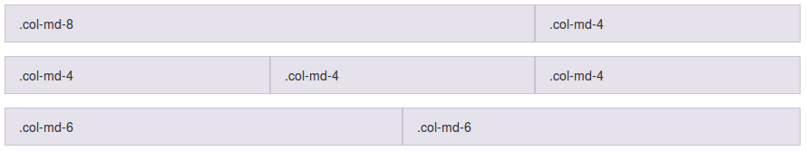
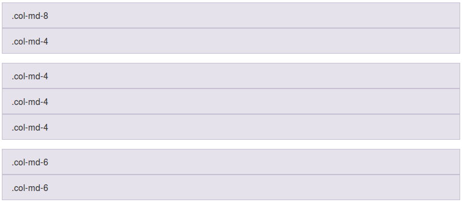
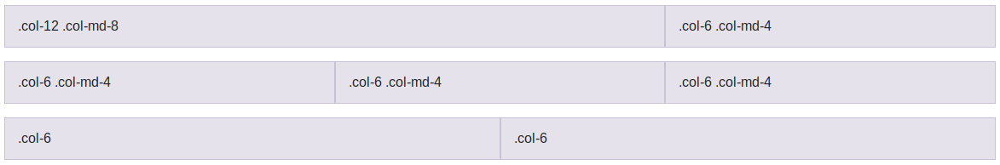
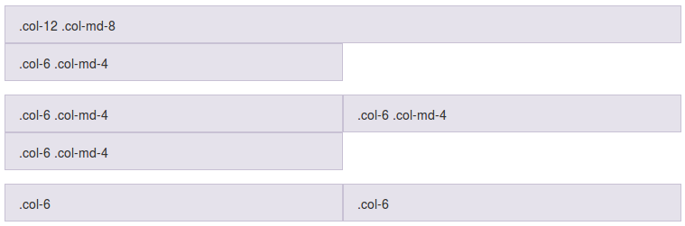
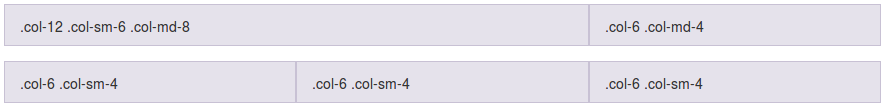
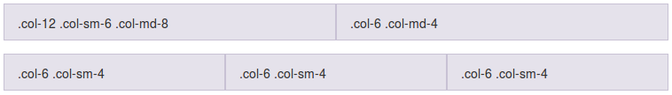
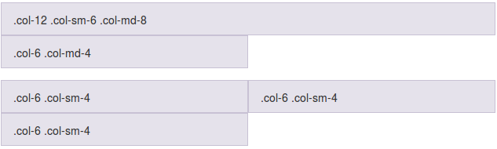

Columnas de ancho específico¶
A continuación se incluyen algunos ejemplos de uso del sistema de rejilla que nos ayudarán a comprender mejor su funcionamiento.
Selección de tamaño de las columnas solo para pantallas medianas¶
En el siguiente ejemplo se han creado 3 filas, la primera dividida en 2 columnas de tamaño desigual, la segunda en 3 columnas de igual tamaño y la tercera en 2 columnas también de igual tamaño.
1 2 3 4 5 6 7 8 9 10 11 12 13 | |
En la siguiente imagen se puede ver el resultado para pantallas de tamaño mediano (tamaños de md en adelante):

Para poder visualizar las columnas se ha añadido una clase CSS que establece color para el borde y el fondo de las cajas. Por defecto, ni la etiqueta DIV ni las etiquetas .col-* establecen apariencia (ni color de borde ni de fondo), solamente establecen la anchura, y por lo tanto al renderizar el código anterior tal cual las cajas se verán transparentes.
Dado que las columnas se han especificado únicamente mediante las clases .col-md-* esto creará estas divisiones solo para las pantallas medianas y grandes, pero no para los tamaños de pantalla más pequeños. En este último caso las columnas se ampliarán para ocupar todo el ancho y por lo tanto se mostrarán apiladas de la forma:

Selección de dos tamaños de columna: pequeño y mediano¶
Si no queremos que las columnas se muestren apiladas para tamaños de pantalla pequeños podemos indicar también la disposición para esos casos mediante las clases .col-* además de las que ya teníamos con .col-md-*. Por ejemplo:
1 2 3 4 5 6 7 8 9 10 11 12 13 14 15 16 17 18 19 20 21 | |
En la siguiente imagen se puede ver como quedaría el código de ejemplo para pantallas medianas y grandes (tamaños de md en adelante): 
En el caso de pantallas pequeñas las columnas se verían de la forma:

Selección de tres tamaños: extra pequeño, pequeño y mediano¶
Si queremos tener un mayor control podemos especificar también el tamaño de las columnas para las pantallas tipo small con las clases .col-sm-*. Por ejemplo:
1 2 3 4 5 6 7 8 9 | |
A continuación se incluye una previsualización de este código de ejemplo para pantallas medianas y grandes (tamaños md, lg, xl y xxl):

El mismo código pero en pantallas tipo small (tamaño sm) se mostraría como:

Y en el caso de pantallas pequeñas se vería de la forma:

Además de los tres tamaños indicados en este último ejemplo para la primera columna (.col-12 .col-sm-6 .col-md-8) podríamos añadir también, si lo necesitamos, el tamaño para pantallas grandes, extra grandes y extra extra grandes con .col-lg-, col-xl- y col-xxl-. Por ejemplo, podríamos haber definido la siguiente columna:
1 | |
En resumen, podemos indicar para cada columna todos los tamaños que queramos de entre los disponibles (con .col-, .col-sm-, .col-md-, .col-lg-, .col-xl- y .col-xxl-). Sin embargo, esto solo lo tendremos que hacer cuando necesitemos establecer un ancho de columna distinto para cada tamaño de pantalla. Si para todos los tamaños de pantalla necesitamos el mismo ancho, entonces utilizaremos solamente la clase .col-. Es decir, no tendría sentido escribir algo como "col-6 col-sm-6 col-md-6 col-lg-6 col-xl-6 col-xxl-6", ya que se conseguiría el mismo efecto que si hubieramos puesto solamente "col-6".
Por lo tanto, solo añadiremos más de una clase cuando necesitemos establecer anchos distintos entre esos tamaños, y además, si solo vamos a diferenciar entre 2 tamaños, solo será necesario usar 2 etiquetas. Por ejemplo, si queremos diferenciar solamente entre movil y escritorio solamente tendríamos que añadir la clase .col- y la clase .col-md-.